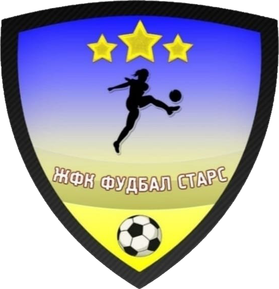

Fudbal Stars vs Skopje 2014
Liga e të Rejave 24/25 - Raundi 25
Rezultati përfundimtar : 0 - 5
Data: 28.05.2025 | Koha: 16:00 | Stadiumi: Igralište Gorni Podlog
Gjyqtarët
- Gjyqtari kryesor: Aleksandar Ananiev
- Ndihmësi i parë: Dejan Stoikov
- Ndihmësi i dytë: David Velkov
Formacionet

Fudbal Stars
Formacioni startues
- 1. Sara Gjorgieva üߧ
- 2. Ledi Jordanova
- 5. Melani Josifova
- 7. Jana Zdravkova
- 10. Marija Velinovska (C)
- 12. Ana Ivanova
- 13. Iva Angelkova
- 20. Matea Velkova
- 21. Melani Careva
- 24. Marija Nikolovska Ana
- 41. Ana Lazarova
Rezervat
- 17. Mila Mijalova
- 22. Megi Georgieva üߧ
- 34. Mila Sokolova

Formacioni startues
- 12. Mina Dimitrievska üߧ
- 2. Besarta Fida
- 6. Ane Velkovska
- 7. Jovana Stojanova ⚽︎ 80'
- 8. Anja Golovska
- 9. Elena Naumoska ⚽︎ 51' ⚽︎ 68'
- 10. Sara Dimitrovska (C) ⚽︎ 5' ︎ 30'
- 13. Iskra Smilevska
- 17. Jovana Karalioska ⚽︎ 60' ︎ 70'
- 18. Blehana Alieska ︎ 50'
- 22. Andrea Aleksovska
Rezervat
- 1. Iva Krstevska üߧ
- 3. Anja Mirovska
- 5. Teodora Avramovska üߧ
- 11. Jana Mandarova
- 14. Jovana Naumovska
- 20. Vela Helman
- 21. Matea Spasovska
- 23. Rejhane Nuhi
- 77. Olja Lazovska
Kronologjia
- ⚽ 5' - Gol nga Sara Dimitrovska (Skopje 2014)
- üü® 30' - Karton p√´r Sara Dimitrovska (Skopje 2014)
- üü® 50' - Karton p√´r Blehana Alieska (Skopje 2014)
- ⚽ 51' - Gol nga Elena Naumoska (Skopje 2014)
- ⚽ 60' - Gol nga Jovana Karalioska (Skopje 2014)
- ⚽ 68' - Gol nga Elena Naumoska (Skopje 2014)
- üü® 70' - Karton p√´r Jovana Karalioska (Skopje 2014)
- ⚽ 80' - Gol nga Jovana Stojanova (Skopje 2014)